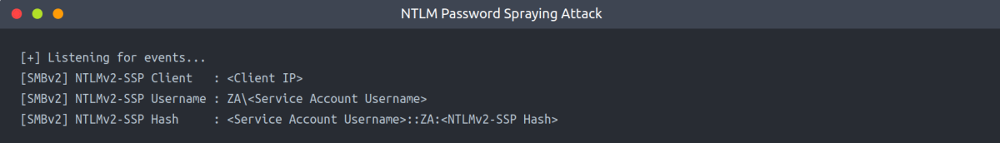
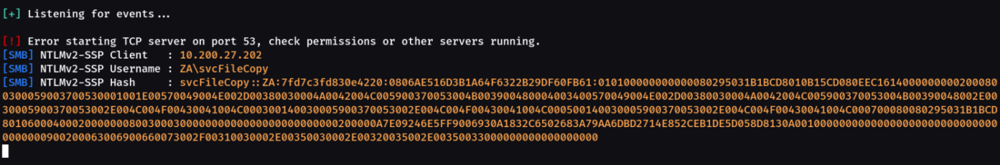
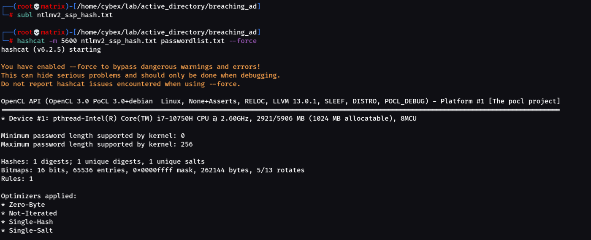
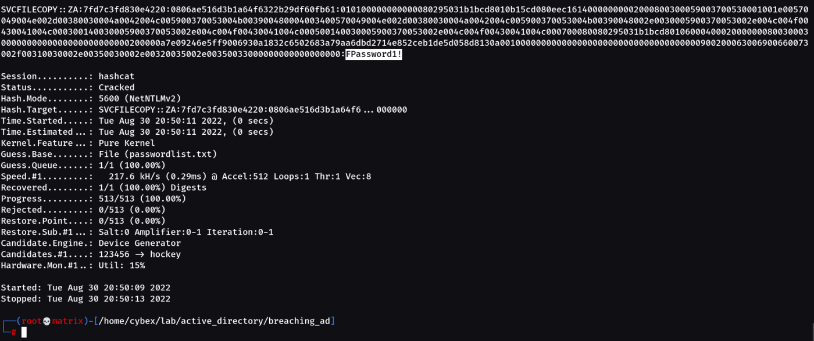
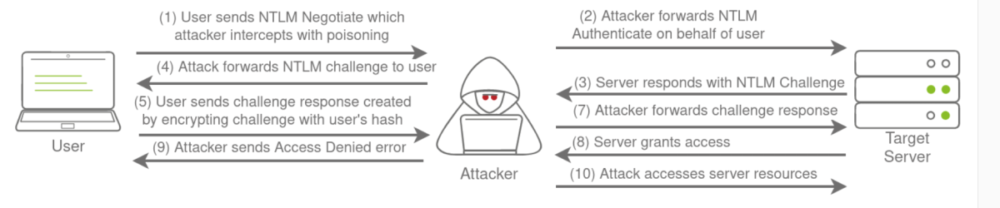

Authentication Relays
Continuing with attacks that can be staged from our rogue device, we will now look at attacks against broader network authentication protocols. In Windows networks, there are a significant amount of services talking to each other, allowing users to make use of the services provided by the network.
These services have to use built-in authentication methods to verify the identity of incoming connections. In Task 2, we explored NTLM Authentication used on a web application. In this task, we will dive a bit deeper to look at how this authentication looks from the network's perspective. However, for this task, we will focus on NetNTLM authentication used by SMB.
Server Message Block
The Server Message Block (SMB) protocol allows clients (like workstations) to communicate with a server (like a file share). In networks that use Microsoft AD, SMB governs everything from inter-network file-sharing to remote administration. Even the "out of paper" alert your computer receives when you try to print a document is the work of the SMB protocol.
However, the security of earlier versions of the SMB protocol was deemed insufficient. Several vulnerabilities and exploits were discovered that could be leveraged to recover credentials or even gain code execution on devices. Although some of these vulnerabilities were resolved in newer versions of the protocol, often organisations do not enforce the use of more recent versions since legacy systems do not support them. We will be looking at two different exploits for NetNTLM authentication with SMB:
▪ Since the NTLM Challenges can be intercepted, we can use offline cracking techniques to recover the password associated with the NTLM Challenge. However, this cracking process is significantly slower than cracking NTLM hashes directly.
▪ We can use our rogue device to stage a man in the middle attack, relaying the SMB authentication between the client and server, which will provide us with an active authenticated session and access to the target server.
LLMNR, NBT-NS, and WPAD
In this task, we will take a bit of a look at the authentication that occurs during the use of SMB. We will use Responder to attempt to intercept the NetNTLM challenge to crack it. There are usually a lot of these challenges flying around on the network. Some security solutions even perform a sweep of entire IP ranges to recover information from hosts. Sometimes due to stale DNS records, these authentication challenges can end up hitting your rogue device instead of the intended host.
Responder allows us to perform Man-in-the-Middle attacks by poisoning the responses during NetNTLM authentication, tricking the client into talking to you instead of the actual server they wanted to connect to. On a real LAN, Responder will attempt to poison any Link-Local Multicast Name Resolution (LLMNR), NetBIOS Name Servier (NBT-NS), and Web Proxy Auto-Discovery (WPAD) requests that are detected. On large Windows networks, these protocols allow hosts to perform their own local DNS resolution for all hosts on the same local network. Rather than overburdening network resources such as the DNS servers, hosts can first attempt to determine if the host they are looking for is on the same local network by sending out LLMNR requests and seeing if any hosts respond. The NBT-NS is the precursor protocol to LLMNR, and WPAD requests are made to try and find a proxy for future HTTP(s) connections.
Since these protocols rely on requests broadcasted on the local network, our rogue device would also receive these requests. Usually, these requests would simply be dropped since they were not meant for our host. However, Responder will actively listen to the requests and send poisoned responses telling the requesting host that our IP is associated with the requested hostname. By poisoning these requests, Responder attempts to force the client to connect to our AttackBox. In the same line, it starts to host several servers such as SMB, HTTP, SQL, and others to capture these requests and force authentication.
Intercepting NetNTLM Challenge
One thing to note is that Responder essentially tries to win the race condition by poisoning the connections to ensure that you intercept the connection. This means that Responder is usually limited to poisoning authentication challenges on the local network. Since we are connected via a VPN to the network, we will only be able to poison authentication challenges that occur on this VPN network. For this reason, we have simulated an authentication request that can be poisoned that runs every 30 minutes. This means that you may have to wait a bit before you can intercept the NetNTLM challenge and response.
Although Responder would be able to intercept and poison more authentication requests when executed from our rogue device connected to the LAN of an organisation, it is crucial to understand that this behaviour can be disruptive and thus detected. By poisoning authentication requests, normal network authentication attempts would fail, meaning users and services would not connect to the hosts and shares they intend to. Do keep this in mind when using Responder on a security assessment.
Responder has already been installed on the AttackBox. However, if you are not using the AttackBox, you can download and install it from this repo: https://github.com/lgandx/Responder . We will set Responder to run on the interface connected to the VPN:
responder -I tun0
Responder will now listen for any LLMNR, NBT-NS, or WPAD requests that are coming in. We would leave Responder to run for a bit on a real LAN. However, in our case, we have to simulate this poisoning by having one of the servers attempt to authenticate to machines on the VPN. Leave Responder running for a bit (average 10 minutes, get some fresh air!), and you should receive an SMBv2 connection which Responder can use to entice and extract an NTLMv2-SSP response. It will look something like this:


As we can see, We successfully captured an authentication request. Once we have a capture, we can start to perform some offline cracking of the responses in the hopes of recovering their associated NTLM passwords. If the accounts have weak passwords configured, we have a good chance of successfully cracking them. Copy the NTLMv2-SSP Hash to a textfile. We will then use the password list provided in the downloadable files for this task and Hashcat in an attempt to crack the hash using the following command:
hashcat -m 5600 <hash file> <password file> --force

And finally

We cracked the password.
Relaying the Challenge
In some instances, however, we can take this a step further by trying to relay the challenge instead of just capturing it directly. This is a little bit more difficult to do without prior knowledge of the accounts since this attack depends on the permissions of the associated account. We need a couple of things to play in our favour:
▪ SMB Signing should either be disabled or enabled but not enforced. When we perform a relay, we make minor changes to the request to pass it along. If SMB signing is enabled, we won't be able to forge the message signature, meaning the server would reject it.
▪ The associated account needs the relevant permissions on the server to access the requested resources. Ideally, we are looking to relay the challenge and response of an account with administrative privileges over the server, as this would allow us to gain a foothold on the host.
▪ Since we technically don't yet have an AD foothold, some guesswork is involved into what accounts will have permissions on which hosts. If we had already breached AD, we could perform some initial enumeration first, which is usually the case.
This is why blind relays are not usually popular. Ideally, you would first breach AD using another method and then perform enumeration to determine the privileges associated with the account you have compromised. From here, you can usually perform lateral movement for privilege escalation across the domain. However, it is still good to fundamentally under how a relay attack works, as shown in the diagram below:

If you want to try this type of attack in action, head over to the Holo Network(Tryhackme). We will also come back to this one in future AD Rooms.